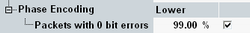

Phase Encoding Limits
The conformance requirements are described in "Differential Phase Encoding Requirements"; for a detailed description of the results refer to "Differential Phase Encoding Results (EDR)".

Phase encoding limits (EDR)
Defines and enables the lower limit as percentage of received fault free packets.
Remote command: